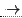

Sig: Recuperación de Errores Sup: Análisis Sintáctico Ascendente en Ant: Manejo en yapp de Con:
| S  a A C | $C{i} = $A{s} |
| S b A B C | $C{i} = $A{s} |
| C c | $C{s} = $C{i} |
| A a | $A{s} = "a" |
| B b | $B{s} = "b" |
b a b c.
C hereda el atributo sintetizado de A. El problema es que, en la pila
del analizador el atributo $A{s} puede estar en la posición 0
o -1 dependiendo de si la regla por la que se derivó fué
S
a A C o bien S
b A B C. La solución
a este tipo de problemas consiste en insertar acciones
intermedias de copia del atributo de manera que se garantize que el atributo
de interés está siempre a una distancia fija. Esto es, se inserta
una variable sintáctica intermedia auxiliar M la cual deriva a vacío
y que tiene como acción asociada una regla de copia:
| S a A C | $C{i} = $A{s} |
| S b A B M C | $M{i} = $A{s}; $C{i} = $M{s} |
| C c | $C{s} = $C{i} |
| A a | $A{s} = "a" |
| B b | $B{s} = "b" |
| M | $M{s} = $M{i} |
El nuevo esquema de traducción puede ser implantado mediante
un programa yapp:
$ cat -n Inherited2.yp
1 %%
2 S : 'a' A C
3 | 'b' A B { $_[2]; } C
4 ;
5
6 C : 'c' { print "Valor: ",$_[0]->YYSemval(0),"\n"; $_[0]->YYSemval(0) }
7 ;
8
9 A : 'a' { 'a' }
10 ;
11
12 B : 'b' { 'b' }
13 ;
14
15 %%
La ejecución muestra como se ha propagado el valor del atributo:
$ ./useinherited2.pl '0x04' Entrada (En Unix, presione CTRL-D para terminar): b a b c Shift 2. Shift 6. Reduce using rule 5 (A,1): Back to state 2, then state 5. Shift 8. Reduce 6 (B,1): Back to state 5, then state 9. Reduce 2 (@1-3,0): Back to state 9, then state 12.
En este momento se esta ejecutando la acción intermedia.
Lo podemos comprobar revisando el fichero Inherited2.output
que fué generado usando la opción -v al llamar a yapp.
La regla 2 por la que se reduce es la asociada con la acción
intermedia:
$ cat -n Inherited2.output
1 Rules:
2 ------
3 0: $start -> S $end
4 1: S -> 'a' A C
5 2: @1-3 -> /* empty */
6 3: S -> 'b' A B @1-3 C
7 4: C -> 'c'
8 5: A -> 'a'
9 6: B -> 'b'
...
Obsérvese la notación usada por yapp para la
acción en medio de la regla: @1-3.
Continuamos con la antiderivación:
Shift 10. Reduce 4 (C,1): Valor: a Back to state 12, then 13. Reduce using rule 3 (S,5): Back to state 0, then state 1. Shift 4. Accept.
El método puede ser generalizado a casos en los que el atributo de interés este a diferentes distancias en diferentes reglas sin mas que introducir las correspondientes acciones intermedias de copia.
Casiano Rodríguez León